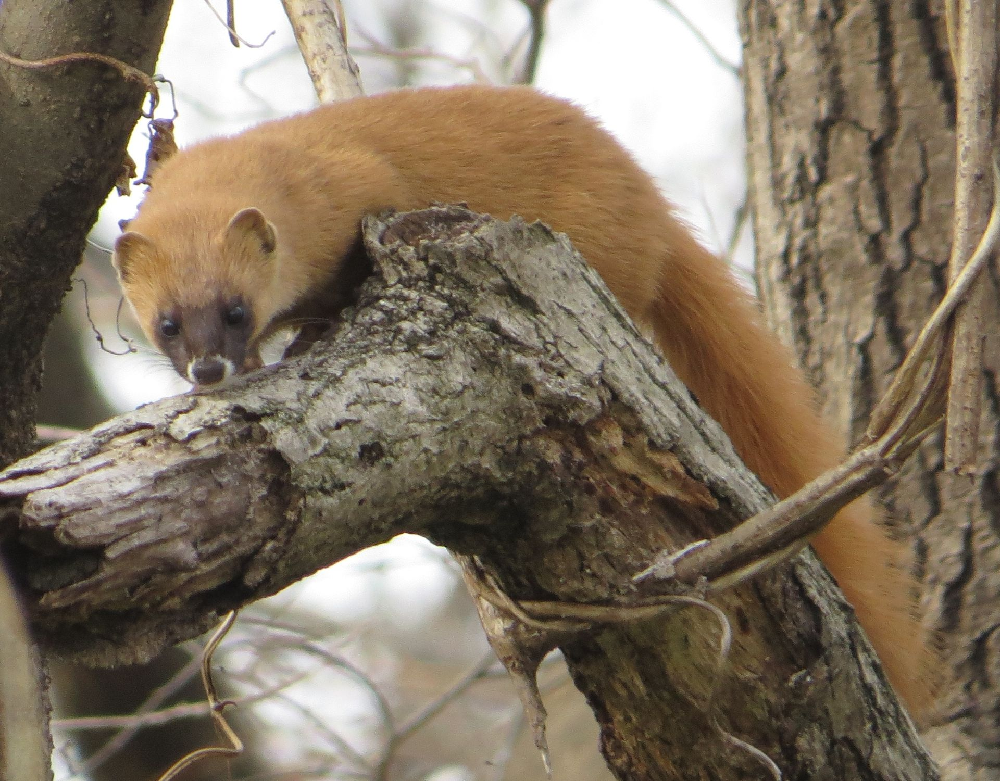
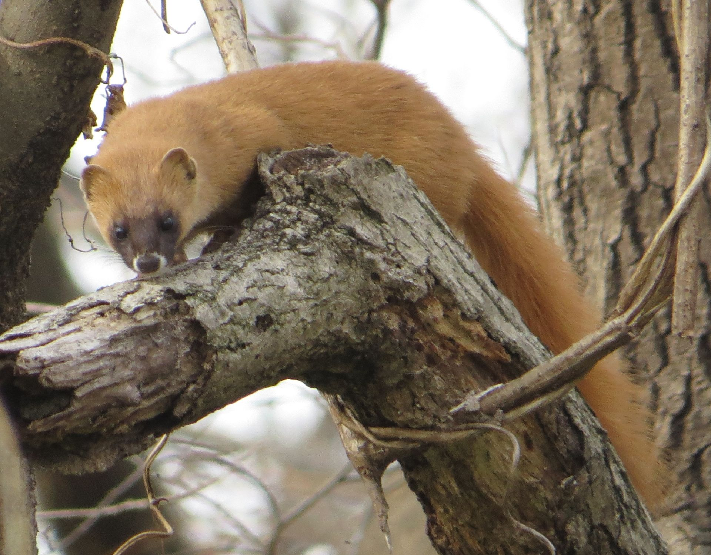

The Japanese weasel (Mustela itatsi) is a carnivorous mammal belonging to the genus Mustela in the family Mustelidae. The most closely related Mustela species is the Siberian weasel (Mustela sibirica). Its taxonomic species name, itatsi, is based on the Japanese word for weasel, itachi (イタチ). It is native to Japan where it occurs on the islands of Honshū, Kyūshū and Shikoku. It has been introduced to Hokkaidō and the Ryukyu Islands to control rodents and has also been introduced to Sakhalin Island in Russia.
It has an orange-brown coloured fur coat with darker markings on the head and varies in size depending on its gender. They have a long slender body, a long tail, relatively short legs and sharp claws. It is often confused with the Siberian weasel which has a different ratio of tail to head and body length. Unlike other species of weasels, their coat does not change colour in winter. Average lifespan of a Japanese weasel is highly dependent on the availability of food and to a lesser extent other factors that affect its life. In the wild it can live for 2 to 3 years with the highest in the range living to about 5 years. The Japanese weasel has a tail ratio of 36–50% while the Siberian weasel has a ratio greater than 50%. The population of the Japanese weasel has seen a decline of 25% over the last 3 generations which has been used to justify its status as near threatened on the IUCN Red List. The government of Japan has prevented the hunting of female Japanese weasels as a measure to conserve the species.
 
